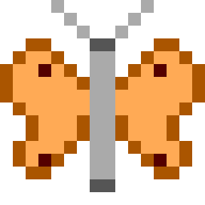

TTLM
A language model running on a computer with no CPU.
What am I looking at?
A Gigatron TTL: an 8-bit computer built from about 30 ordinary logic chips (adders, registers, multiplexers) and no microprocessor. It runs at 6.25 MHz with 32 KB of RAM. Your browser is emulating it cycle by cycle, running the same program as the real machine, at the same speed.
The program is a transformer, the same kind of model as the large chatbots, shrunk to 22,000 weights. The Gigatron has no separate video memory, so the model lives on the screen: the colored noise at the top is the model, its weights and its memory of the conversation. The thin line just above the title holds the activations, and it flickers while the moth thinks.
While it thinks, the screen shows only one line in four. The Gigatron draws the picture in software, and every line it skips is time handed back to the model, about ten times more of it. Expect two seconds per word.
The moth
On 9 September 1947, operators of the Harvard Mark II found a moth in a relay and taped it into the logbook: “First actual case of bug being found.” TTLM's model is that moth. It lives in the Gigatron, loves the light of the screen and the warmth of the chips, eats dust, and knows about 150 words. Ask it about anything else and it will tell you it only knows light.
A transformer without a multiplier
- Ternary weights. Every weight is −1, 0 or +1, so a matrix product is only additions and subtractions. 63 % of the weights are zero and cost nothing.
- Integers everywhere. Normalization and scaling are bit shifts, softmax is two small tables, and the few products inside attention use a table of quarter squares.
- Hand-written inner loop. The inputs are copied to one memory page as
xand−x, so each stored weight index is directly the address to add: one load and one addition per weight. - Bit-exact. The model was trained in PyTorch as integer arithmetic. The Python reference and the Gigatron program produce identical numbers.
Numbers
| Model | decoder-only transformer, 2 layers, width 32, 2 heads |
| Weights | 21,984, ternary, 9 KB on the Gigatron |
| Vocabulary / context | 155 words / 20 tokens |
| Arithmetic | integers only, no multiplier in the linear layers |
| Speed | about 0.5 words per second |
| Hardware | Gigatron TTL, 6.25 MHz, 32 KB RAM, no CPU |
Source code, training and the build for a real Gigatron: github.com/storagebits/ttlm